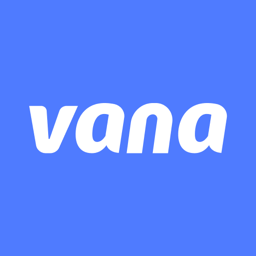
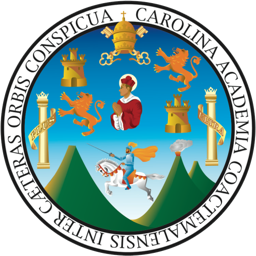
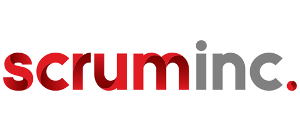
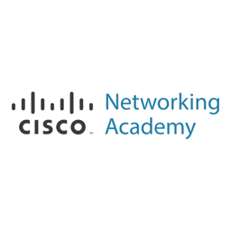
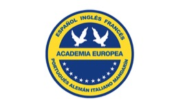

José Pablo Valiente Montes
Support Engineer · Soporte de producción y desarrollo de software
Guatemala · jpablo15351@gmail.com · linkedin.com/in/jose-pablo-valiente-montes · josepablovaliente.github.io
Sobre mí
Soy Support Engineer especializado en soporte de producción e investigación de causa raíz en plataformas serverless sobre AWS, con formación en Ingeniería en Ciencias y Sistemas en la Universidad de San Carlos de Guatemala.
Actualmente trabajo como Support Engineer en Vana, una fintech de crédito digital que opera en Guatemala, República Dominicana, Honduras y Perú. Rastreo cada incidente de punta a punta: desde la app móvil y web hasta los microservicios, los eventos y las bases de datos. Mi trabajo es convertir los reportes de los usuarios en hallazgos verificados que los equipos de desarrollo puedan usar para corregir el problema.
Antes fui Líder de Equipo en Canella, S.A. en el desarrollo de la banca virtual de Banco Industrial (Bi en Línea), trabajando con .NET, servicios REST y SQL Server bajo Scrum.
Vengo del mundo de la robótica y la fabricación digital: fui auxiliar en el Fab-Lab y en la Dirección General de Investigación de la USAC, y mi equipo ganó el 2.º lugar latinoamericano en el TJR 2021. Esa formación me dejó una forma de trabajar muy práctica: entender cómo funciona el sistema completo antes de tocar una pieza.
I'm a Support Engineer specialized in production support and root-cause analysis on AWS serverless platforms, with a background in Computer Science and Systems Engineering from Universidad de San Carlos de Guatemala.
I currently work as a Support Engineer at Vana, a digital lending fintech operating in Guatemala, the Dominican Republic, Honduras and Peru. I trace each incident end to end, from the mobile and web apps down to the microservices, events and databases, and turn user reports into verified findings that development teams can act on.
Previously I was a Team Lead at Canella, S.A., working on Banco Industrial's online banking platform (Bi en Línea) with .NET, REST services and SQL Server under Scrum.
My background is in robotics and digital fabrication: I was an assistant at USAC's Fab-Lab and Research Directorate, and my team won 2nd place in Latin America at TJR 2021. That background taught me to understand the whole system before touching any single part.
Aptitudes profesionales
Experiencia laboral

- Investigo la causa raíz de incidentes en producción de la app móvil y web reportados por Operaciones en 4 países, analizando el comportamiento de los sistemas de punta a punta.
- Diagnóstico basado en datos reales de producción para reconstruir la línea de tiempo de cada caso y separar la causa real de los síntomas reportados.
- Documento hallazgos verificados con evidencia y cadena causal para los equipos de desarrollo, en flujos críticos de negocio: créditos, pagos, desembolsos, billetera y autenticación.
- Desarrollo scripts de corrección de datos con respaldo previo, modo de prueba (dry-run) y validaciones de seguridad antes de modificar registros productivos.
- Construí un dashboard de métricas para el equipo de Production Support: tiempos por estado, rendimiento del equipo y calidad del flujo de tickets.
- Diseñé una base de conocimiento asistida por IA para agilizar el diagnóstico de incidentes, que permite a los ingenieros consultar el comportamiento de los sistemas sin revisar el código a mano.
- Dirección de proyectos y liderazgo del equipo dentro de la unidad de desarrollo.
- Responsable de las líneas Híbrida-5, Bel-Web-10 y Bel-Web-2 en el desarrollo de la banca virtual de Banco Industrial (Bi en Línea) y del back-end de la app móvil Bi en Línea APP.
- Desarrollo de aplicaciones web con .NET (C#, ASP.NET MVC), servicios REST y SQL Server.
- Coordinación del equipo bajo Scrum: planificación de sprints, seguimiento en Jira y revisión de entregables.
- Resolución de problemas técnicos complejos, reconocida en la carta de recomendación de la gerencia de desarrollo.

- Desarrollo del firmware y software de un prototipo de robot móvil agrícola (Proyecto DES-12 "Farmbot").
- Diseño de la aplicación web de control del robot y de su red local.
- Apoyo en la fabricación de prototipos con impresoras 3D, CNC láser CO₂ y herramientas eléctricas.
- Desarrollo de software para proyectos del laboratorio.

- Desarrollo del front-end del sitio web con React y Material UI.

- Control de calidad de productos en órdenes despachadas.
Educación
Certificaciones y reconocimientos

- Por la destacada participación en el Torneo de Robótica TJR, realizado en Brasil en modalidad virtual.

- Networking for Home and Small Businesses (Dic 2010)
- Working at a Small-to-Medium Business or ISP (Sep 2011)

Proyectos y logros
- Reconocimiento de la universidad por la contribución y la exposición magistral en su conferencia de robótica.
- Robot capaz de recorrer un circuito de forma autónoma y evadir obstáculos en el menor tiempo posible.
- Prototipo para apoyar actividades agrícolas repetitivas: firmware, aplicación web de control y red local del robot.
- Métricas de tickets del equipo: KPIs, tiempo por estado, rendimiento del equipo y calidad del flujo.
- Base de conocimiento para que los ingenieros consulten el comportamiento de los sistemas sin revisar el código a mano.
- Diseño y construcción de una impresora 3D FDM de bajo costo.
- Programación del microcontrolador para el control de sensores, luces y bomba en una estación de sanitización para la entrada de edificios concurridos.
- Modelado 3D de escudos faciales durante la pandemia.
- Desarrollo de proyectos técnicos a través de máquinas de control numérico. Marzo 2021.
- Protocolos de comunicación utilizados en robótica e IoT. Abril 2022.
Voluntariado